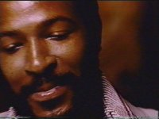

Biography
Chris Dykhouse
The music we all remember... the man we all forgot... Marvin Gaye
Music permeates every aspect of our lives. From television to movies, from the car radio to the supermarket checkout, music has even found its way into greeting cards and children's books. Because we are constantly bombarded by new musicians, songs, and styles, we quickly judge and form opinions of these things. However, even if someone excels at entertaining and making music, we don't always remember them. Marvin Gaye recorded over forty albums and had forty songs reach the Top Forty with eighteen of those in the Top Ten; but to date, most people ask “Who?” after any mention of his name. Many people recognize his songs, as they frequently appear on television commercials and in other artists' songs, but they don't know anything about him or his life. Marvin Gaye led a troubled but successful life, and has even been cited by Motown as their “most successful artist” (Marvin Gaye Biographical Information). For this he deserves the recognition earned by his many years of entertaining people around the world.
Born on April 2, 1939, Marvin Pentz Gay Jr. was born into a world that would influence his life greatly, in both positive and negative ways. He was the first son born to Alberta Gay and Marvin P. Gay Sr. of Washington D.C. Because his father was a minister in the Pentecostal church, Marvin was involved in music of the church from a very young age. One author states that “Marvin entered the church at three years old when his father encouraged him to sing, and even at this tender age the Reverend recognised [sic] a talent which he felt would lead to a singing career” (Davis 14). Marvin continued to perform for several years in his father's church, further developing his talents for singing and playing various instruments. However, his father served not only as a positive influence but also as a debilitating presence his entire life. Marvin's poor relationship with his father stemmed from his father's short temper and high expectations (a product of his strict religious faith); it “'Seemed like Mr. Gay had a grudge against his son. He had expectations which were too high for a little boy to reach'” (Divided Soul 11). In addition, Marvin seemed to instigate trouble with his father, going as far as adding an “e” to his last name when he went into show business. Even after he had established a successful career, his father's unsatisfied demands and abuse sontinued to plague him.
Another influence that shaped Marvin from his early childhood was the neighborhood in which he spent much of his childhood. One interviewer said that “the most frightening time was the first 17 years, the ones spent in Washington D.C., in a ghetto he and his friends called Simple City” (Cahill 41). It was there,. in Washington D.C., that Marvin really began his singing career. Besides his involvement in the music of his father's church, he spent much time singing with his friends in high school, both in school and on street corners. After high school his father forced him into a short service in the Air Force; after he was discharged, Marvin formed a singing group called The Rainbows, which was aided by Bo Diddley and later became the Moonglows. Marvin continued to sing semi-professionally with the help of Harry Fuqua until Berry Gordy Jr., the founder of the fledgling Motown Record Company, discovered him in a nightclub. Marvin was hired as a singer in 1961, and this marked the beginning of a long, productive career with Motown.
It was during his career at Motown that Marvin produced most of his well-known songs and his attitude was the most positive. He once said that “'You sweated and ached and played; but you were young, and your eyes were full of love and show business and music, and you were having fun and getting money for it'” (Fong-Torres 59). Although he was hired as a singer, Marvin initially showcased his musical talent by playing instruments for other artists, such as The Marvelettes and The Miracles. Eventually he started recording his own songs, but it wasn't until 1963 when Pride & Joy hit the pop charts. This was a mixed blessing, though, as author David Ritz says in his book Divided Soul. The success of Pride & Joy established him “as something more than a rhythm-and-blues star. Now white kids were listening to his music. His commercial value had risen dramatically. For most artists this would be a moment of great jubilation. Unable to enjoy his success, Marvin grew anxious” (82). This anxiety, which stemmed in part from a desire to please his father, accompanied him on every tour and in every concert that he performed until his death.
In 1964, Marvin began relationships with many women that would greatly change both his life and his career. The first was the woman that Marvin fell in love with and married: Anna Gordy, the sister of Motown's founder. Marvin had already achieved 6 Top-Forty hits by this time, and his performance did not decrease. She was 17 years older than he was, so she provided a guiding force in Marvin's life, and he often said “'I sang all these songs for Anna'” (Divided Soul 90). It was also in 1964 that he began singing duets with several already-famous women. The first of these women was Kim Weston, with whom Marvin recorded the album Together. His working relationship with Weston rapidly declined though, and after a short time they stopped singing together. He also sang with Diana Ross and Mary Wells, but it was in 1967 that he began singing duets with another of Motown's female singers: Tammi Terrell. This pairing of musical talents produced three albums and nine chart topping hits in just over two years. However, it also produced marital and emotional problems for Marvin. Marvin and Tammi enjoyed such great success and were so popular that many people speculated about their romantic involvement. In addition,
“Women of all shades started falling for Marvin in greater numbers not only because of his clean-cut pretty-boy looks, but also because of the peculiarly personal nature of the love songs he sang with lady singers. With this visibility, however, came problems. 'I suppose you could say that the duets were not great for my marriage,' Marvin said” (Divided Soul 91-92).
His wife was a jealous woman, so his increased popularity and the rumors of Marvin and Tammi's romance angered her greatly. These things, on top on an already strained marriage, created many problems for Marvin. The next few years took a turn of events that also troubled him. In 1970, Terrell died of a brain tumor. Marvin had been so enamored by his singing partner that her death made him reclusive. With this, relationships with both of the important women in his life were dead or quickly dying, and he didn't know to whom he could turn. He spent several years hiding from the fans that had given him enormous success. He refused to perform any concerts, but did not cease all musical activity. “In fact, while he wanted to give the world the impression that he had retreated, he was, in fact, stepping out: For the first time in his career, he decided to produce” (Divided Soul 137).
It was when he started to produce that he released an album that redefined his style and sent his career in a new direction. “What's Going On” was a completely different album for Marvin; there were changes in the production, the album sleeve, the cover, the vocal quality, and the lyrical content (Davis 117-118). This album was a “socioreligious work of astounding originality, a suite concerned not with the romance but with the soul and salvation” (Divided Soul 136). The first single released was the title track What's Going On, and this sold 70,000 copies in one week (Davis 119). The success of this album reinforced Marvin's sense of confidence. “Thirty-one-year-old Marvin Gaye was nonplussed over the single's astonishing success. It had only proved what he'd been trying to say for years that, given the chance, he was capable of writing and producing without Motown” (Davis 119). The success of this album again strained his marriage with Anna, so the arrival of another woman in his life was a welcome change.
It was in 1973, during the production of “Let's Get It On,” that Marvin met Janis Hunter, who would become his second wife. She was sixteen years younger than he was, but he was so enchanted by this woman that exemplified his fantasies that he spent the next four years living with her. She exerted a great influence on his life and music, the most significant of which was seen in Let's Get It On. He poured his whole soul into the album, which topped the charts and further changed Marvin's career and image. This album was a “exuberant, unabashed paean to sex “Let's Get It On” was the second most popular record he made for Motown” (Fong-Torres 59). Like What's Going On, which had addressed social issues, the new album “revealed his struggle to get past the sex-only-for-procreation concept of his father's church” (Divided Soul 178). After the release of this album, Marvin felt a great change in his personal life (especially with Janis) and in his career.
In 1975, Anna Gordy Gaye filed for divorce. The divorce proceedings were long and bitter, as Marvin became defensive and defiant and sought to antagonize Anna in any way he could. They finally reached a settlement, which was a little unusual: Marvin had to record an album and give all the proceeds to Anna in lieu of alimony. The album was Here, My Dear, which “contained cynical, personal statements [and] was devoted to discovering and sharing love, the loss of that love and the bitterness and pain caused by that loss. In other words, it was a breakdown of his fourteen-year-old marriage and of the joy of discovering a new love” (Davis 175). This was the first in a series of events that deeply disturbed Marvin and drove him further into a self-destructive regimen of drugs and alcohol (to which he was no stranger). After having lived with her for four years and having had two children with her, and in another attempt at happiness, Marvin married Janis Hunter in 1977. This did not bring him happiness, though, since he felt trapped by his new wife soon after they were married, and their relationship reflected it. Marvin was also plagued by several substandard albums, which dealt a harsh blow to his confidence. He was using heavy amounts of cocaine and other drugs and spending money faster than he could make it. These pressures surrounded Marvin and made him feel trapped, leaving him no choice but to run away and get away from his troubles.
In 1979, Marvin entered in a period of decline marked by rampant drug use, unreliability in his concert appearances, and a general state of ill health. It started when he fled to Hawaii and settled there for a few months. At one point, he suffered a drug-induced illness that made it necessary to cancel or postpone his concerts and tours. While he was in Hawaii, Janis visited him several times. Each time they argued horribly, and at one point Marvin almost killed Janis. After her second visit, Janis took their son and went to live with Teddy Pendergrass, one of Marvin's best friends and Janis' new lover. Finally, after evading the IRS and Motown for extended periods of time, Marvin retreated to England and Europe to tour and to try to salvage his career and reputation. His concert appearances were not well accepted, and his relationship with his promoter, Jeffrey Kruger, was very strained. Finally, he retreated to Ostend, Belgium, where he settled for a while; he was “besieged by the IRS for $2 million in back taxes, forced to declare bankruptcy and squabbling with Motown” (Goldberg 13). He lived there for a few months, relaxing and exercising to regain the figure that had gained him popularity twenty years earlier. While he was overseas, Motown released “In Our Lifetime”, an album that Marvin had nearly finished before leaving Hawaii. This outraged Marvin, as he did not feel it was complete and had not authorized its release. He sought to severe his ties with Motown, which he announced “as his signature dried on a recording contract with CBS” (Davis 228) in 1981. Senior vice-president Arnold Larkin had come to Belgium to negotiate the contract with Marvin, and CBS paid Motown $2 million to buy out the contract in 1982. Marvin then returned to recording in an attempt to patch together his life and his career.
In 1982, Marvin released “Midnight Love” under the CBS label. He toured the United States to promote his new album, which eventually sold 1.5 million copies and earned him two Grammies (Marvin Gaye Biographical Information). It was the first top ten album he had recorded in six years, but the tour was a disaster, financially and artistically. “Bad business decisions and high overhead made the tour a financial bust, and some critics saw it as an artistic debacle as well. Gaye seemed unwilling or unable to cut loose with the vocal firepower that had won him legions of fans” (Goldberg 16). During this tour he became increasingly paranoid and he began to collect large numbers of guns. Defeated, rejected, and scared, Marvin needed to be with his mother.
In 1982, in a move that would ultimately kill him, Marvin Gaye moved home to be with his mother. “She had survived a serious operation, but Marvin, in another of his fatally ironic twists, couldn't survive his final success” (Ritz 23). Just one month earlier, Marvin Gay Sr. had left and returned to Washington D.C. for a few months to fix up his home and sell it. His father's absence served as a mixed blessing for Marvin. Upon returning to L.A., he was able to move into a stable home, free of his father. His career seemed to be recovering, and it seemed like he was patching his life back together. However, it was when his father returned in January 1983 that Marvin's death became imminent. The conflict was greater than ever, and “Marvin's instincts were to throw his father out of the house. Father's instincts were to prevent Marvin from entering the house. Nothing had changed-the fierce competition, the jealousy, the head games, the hatred, four long decades of smoldering resentment” (Divided Soul 313). In an environment that was so charged with emotion and strife, it was inevitable that Marvin and his father clash in a final stand off. This confrontation was on April 1, 1984.
On the day before his forty-fifth birthday, Marvin Gaye was killed by his father. Marvin was in an upstairs bedroom, talking with his mother, when his father began yelling at them from downstairs. Eventually Marvin yelled back at his father, who came upstairs and confronted them. Marvin ended up pushing his father into the hallway, where the argument continued. Finally, Marvin Sr. went back downstairs. He soon returned with a .38-caliber revolver and shot Marvin twice. He threw the gun into the bushes and sat peacefully on the front porch, waiting for the police and the ambulance to arrive. Mrs. Gay ran next door to Marvin's brother Frankie's house, and the police and paramedics were called. “When the police and paramedics arrived the scene was inevitably one of confusion and chaos However, more alarming and distressing are the absurd, tragic circumstances which followed because Marvin Gaye need not have died!” (Davis 253). There was some confusion as to the location of the gun used in the murder, so the paramedics would not enter the house for over an hour. Marvin Gaye bled to death in his brother's arms while the paramedics stood outside. At his funeral, over 10,000 fans and admirers filed past his coffin to pay homage to the man that had entertained them for nearly 30 years. One man that was not at the funeral was Marvin Gay Sr.
Marvin Gay Sr. was in the Los Angeles County Men's prison during the funeral. He claimed that his son had attacked him and that he fired the gun in self-defense, and even said that he didn't realize the gun was loaded with real bullets. He pleaded not guilty, and later that month a tumor was found in his head. After it was removed and he was ruled competent to stand trial, he pleaded no contest to a charge of voluntary manslaughter. On November 2, 1984, Marvin Gay Sr. was sentenced to five years probation for the murder of his son. He died in 1998 in a rest home in California.
The death of Marvin Gaye caused a great immediate impact and he has gained much recognition since then. “Marvin Gaye's death had the same impact on the music industry and record buyers as Marilyn Monroe's equally tragic demise the public rushed to buy his music” (Davis 257). In 1987, Marvin was inducted into the Rock and Roll Hall of Fame. In 1991, due to an effort headed by Los Angeles reporter Ron Brewington, Marvin received a star on the Hollywood Walk of Fame. However, this is not enough recognition for the man whose music spanned three decades and who survived several massive changes in musical styling. A man of Marvin Gaye's talent and versatility deserves to be spoken of in the same breaths as Frank Sinatra, Elvis Presley, and Michael Jackson. But even without this recognition, Marvin Gaye still produced good music. That fact will never change.
References
- Cahill, Tim. “The Spirit, The Flesh, and Marvin Gaye.” Rolling Stone. 11 Apr. 1974, 40-44.
- Davis, Sharon. I Heard It Through The Grapevine: Marvin Gaye: The Biography. Edinburg, UK: Mainstream Publishing Company LTD, 1991.
- Fong-Torres, Ben, and Loder, Kurt. “From Sideman to Superstar.” Rolling Stone. 10 May 1984, 14+.
- Goldberg, Michael. “Trouble Man.” Rolling Stone. 10 May 1984, 13+.
- Marvin Gaye Biographical Information. Motown Record Company. 1996. http://www.motown.com/motown/artists/Marvin_Gaye/gaye_B.html.
- Ritz, David. “A Voice Set Free.” Rolling Stone. 10 May 1984, 19-23.
- Ritz, David. Divided Soul: The Life of Marvin Gaye. New York: Da Capo Press, Inc., 1985.
Copyright 1998 by Chris Dykhouse. Not to be reprinted in whole or in part without permission from the author.